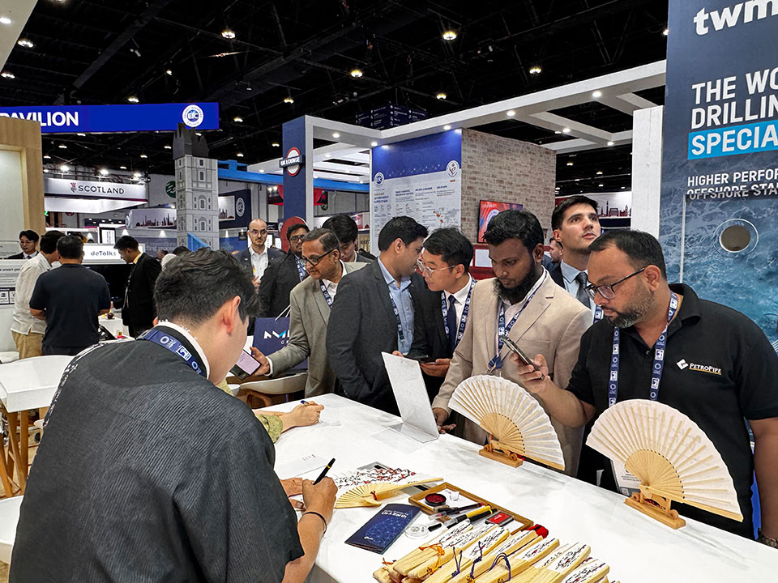
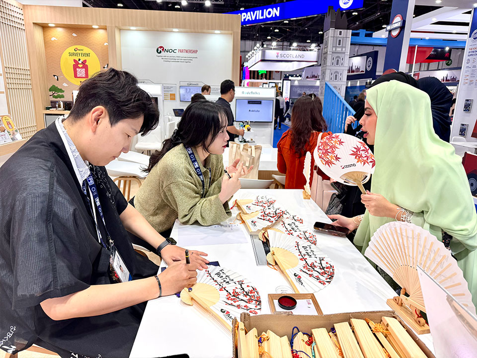
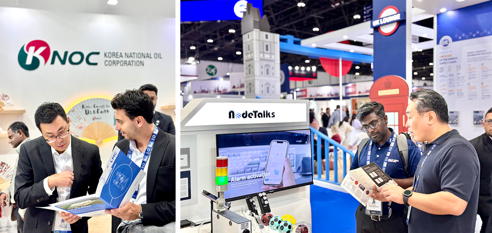
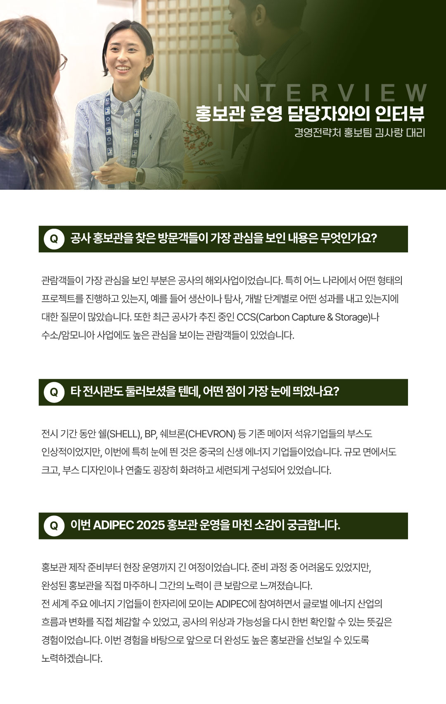

공사가 11월 3일부터 6일까지 UAE 아부다비 ADNEC에서 개최된 ADIPEC 2025에 참가했다. 올해 공사는 UAE에서 사업 기회 발굴을 희망하는 6개 중소기업과 함께 홍보부스를 운영, 신재생에너지를 비롯한 주요 사업 내용을 홍보했다. 공사가 본 행사에 참여한 의미, 그리고 현장에서 홍보관을 직접 운영한 홍보팀 김사랑 대리와의 인터뷰 내용도 함께 소개한다.
세계 최대 규모 석유 및 가스 전시회에 참가
공사가 UAE 아부다비에서 열린 세계 최대 규모의 석유 및 가스 전시회, ADIPEC에 참여했다. 올해 행사의 주요 테마는, 에너지 산업의 혁신, AI 및 디지털 전환, 글로벌 에너지 전환과 지속가능성으로, 전 세계 160개국 이상, 2,250개 이상의 기업, 16,500명 이상의 컨퍼런스 참가자가 이 행사가 열린 ADNEC을 찾았다.
공사 홍보관 주제는 K-Culture & K-Energy
공사는 국내외 석유 및 가스 개발의 성과와 저탄소 미래를 위한 CCUS(Carbon Capture and Storage) 기술, 해외 파트너십 사례 등을 적극적으로 소개하는 것을 비롯해, 최근 <오징어 게임>, <케데헌> 등 세계적으로 한국 문화에 대한 관심이 뜨거운 흐름을 반영해 한국적인 감성과 분위기가 자연스럽게 느껴지도록 디자인했다. 특히 관람객들이 직접 체험하며 한국 문화를 즐길 수 있도록 전통부채 캘리그라피, 공기놀이, 노리개 만들기 등 다양한 이벤트를 마련해 주목받았다.


6개 중소기업과 함께 홍보관 운영, 실질적 비즈니스 상담으로 이어져
특히, 이번에는 공사에서 6개의 중소기업과 함께 홍보부스를 마련했는데, 현장에서의 관심도 뜨거웠다. 가스탐지기, 오일나노필터 등 석유·가스 산업과 관련된 기술을 보유한 6개 중소기업이 개별 부스를 통해 참여했는데, 각 기업이 자사 제품과 기술을 세계 큰 무대에서 직접 홍보할 수 있는 의미 있는 기회가 됐다. 현장에서 중소기업 부스에 대한 관심이 높았고, 실제로 바이어들이 제품 시연이나 기술 상담을 요청하는 등 실질적인 비즈니스 상담이 활발하게 이루어져 의미를 더했다.

그런 가운데 공사 김동섭 사장은, 오프닝 세러모니를 비롯해 ‘Scaling Innovations Across the energy value chain’을 주제로 열리는 패널 토론 세션에 참석하고, ADNOC, 엑슨 모빌, 인펙스, 페트로나스, CNPC 등 ADIPEC에 참가한 주요 인사들과 면담을 진행했다.
홍보관 운영 담당자와의 인터뷰

경영전략처 홍보팀 김사랑 대리Q1. 공사 홍보관을 찾은 방문객들이 가장 관심을 보인 내용은 무엇인가요?
관람객들이 가장 관심을 보인 부분은 공사의 해외사업이었습니다. 특히 어느 나라에서 어떤 형태의 프로젝트를 진행하고 있는지, 예를 들어 생산이나 탐사, 개발 단계별로 어떤 성과를 내고 있는지에 대한 질문이 많았습니다. 또한 최근 공사가 추진 중인 CCS(Carbon Capture & Storage)나 수소/암모니아 사업에도 높은 관심을 보이는 관람객들이 있었습니다.
Q2. 타 전시관도 둘러보셨을 텐데, 어떤 점이 가장 눈에 띄었나요?
전시 기간 동안 쉘(SHELL), BP, 쉐브론(CHEVRON) 등 기존 메이저 석유기업들의 부스도 인상적이었지만, 이번에 특히 눈에 띈 것은 중국의 신생 에너지 기업들이었습니다. 규모 면에서도 크고, 부스 디자인이나 연출도 굉장히 화려하고 세련되게 구성되어 있었습니다.
Q3. 이번 ADIPEC 2025 홍보관 운영을 마친 소감이 궁금합니다.
홍보관 제작 준비부터 현장 운영까지 긴 여정이었습니다. 준비 과정
중 어려움도 있었지만, 완성된 홍보관을 직접 마주하니 그간의
노력이 큰 보람으로 느껴졌습니다.
전 세계 주요 에너지 기업들이 한자리에 모이는 ADIPEC에 참여하면서
글로벌 에너지 산업의 흐름과 변화를 직접 체감할 수 있었고, 공사의
위상과 가능성을 다시 한번 확인할 수 있는 뜻깊은 경험이었습니다.
이번 경험을 바탕으로 앞으로 더 완성도 높은 홍보관을 선보일 수
있도록 노력하겠습니다.